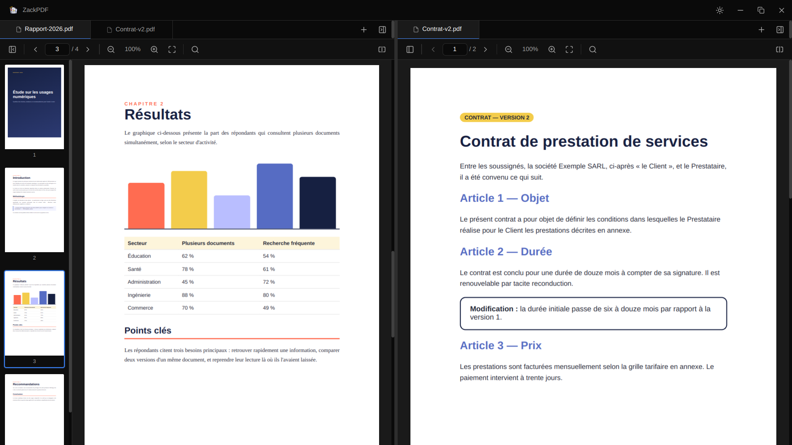
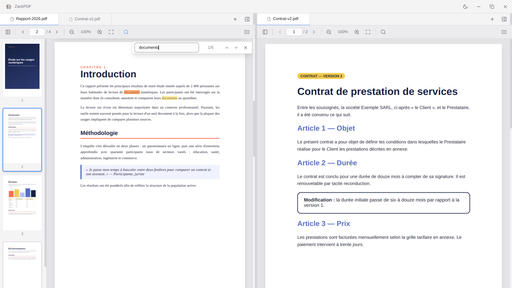

Panneaux côte à côte
Scindez la fenêtre pour comparer deux documents, ou deux pages du même document, sans jongler entre les fenêtres.
Sélectionnez plusieurs documents, faites « Ouvrir avec ZackPDF » : ils s'ouvrent en onglets, prêts à être lus et comparés côte à côte. Pour Windows, macOS et Linux.
Windows · macOS · Linux
Pensé pour lire, comparer et retrouver une information sans perdre de temps.
Scindez la fenêtre pour comparer deux documents, ou deux pages du même document, sans jongler entre les fenêtres.
Ouvrez autant de PDF que vous voulez, d'un seul coup. Glissez un onglet d'un panneau à l'autre pour réorganiser votre espace.
Chaque occurrence est surlignée et vous passez de l'une à l'autre en un clic, même sur des centaines de pages.
Fermez l'application, rouvrez-la : vos onglets, vos panneaux et la page où vous en étiez sont restaurés.
Naviguez avec les miniatures des pages, zoomez avec Ctrl + molette. Les pages se chargent au fil du défilement pour rester fluide.
Un thème sombre reposant pour lire le soir, un thème clair pour la journée. Et un double-clic sur un PDF suffit à l'ouvrir.
Pas de maquette ici : voici ZackPDF tel que vous l'installerez.


Les raccourcis s'appliquent au panneau actif.
Gratuit, sans publicité et sans compte. Choisissez votre système.
Si Windows affiche « Windows a protégé votre ordinateur », cliquez sur Informations complémentaires puis Exécuter quand même.
L'application n'est pas signée par Apple. Au premier lancement : clic droit sur l'app → Ouvrir. Si macOS indique qu'elle est endommagée, lancez dans le Terminal : xattr -cr "/Applications/ZackPDF.app"
AppImage : rendez le fichier exécutable avec chmod +x ZackPDF-Linux-x86_64.AppImage puis lancez-le.
Toutes les versions et les sommes de contrôle SHA-256 sont sur la page des releases GitHub.
Le code de ZackPDF est public sur GitHub. Vous pouvez le lire, le modifier, l'améliorer et le redistribuer librement. Vos documents restent sur votre ordinateur : l'application ne collecte rien et n'envoie rien.
# Lancer le projet en local $ git clone https://github.com/codeByDarknet/zackpdf $ cd zackpdf $ npm install $ npm run dev
Oui. ZackPDF est gratuit, sans publicité, sans abonnement et sans compte. Le code est sous licence MIT.
Non. Les PDF sont lus directement depuis votre disque. L'application fonctionne entièrement hors ligne et n'envoie aucune donnée.
Sélectionnez-les dans votre explorateur de fichiers (Ctrl + clic, ou Cmd + clic sur Mac), puis clic droit → Ouvrir avec → ZackPDF. Chaque document s'ouvre dans son propre onglet. Si ZackPDF est déjà ouvert, ils rejoignent la fenêtre existante.
Après l'installation, faites un clic droit sur un PDF → Ouvrir avec → ZackPDF, et cochez l'option pour toujours l'utiliser. Sous Windows, passez par Paramètres → Applications → Applications par défaut.
Les certificats de signature de Microsoft et d'Apple sont payants, et l'application n'en a pas encore. Le code est public et chaque version est construite automatiquement sur GitHub à partir de ce code. Vous pouvez vérifier le fichier téléchargé avec le fichier SHA256SUMS.txt de la release.
Téléchargez la nouvelle version depuis cette page et installez-la par-dessus l'ancienne. Vos onglets et votre session sont conservés.